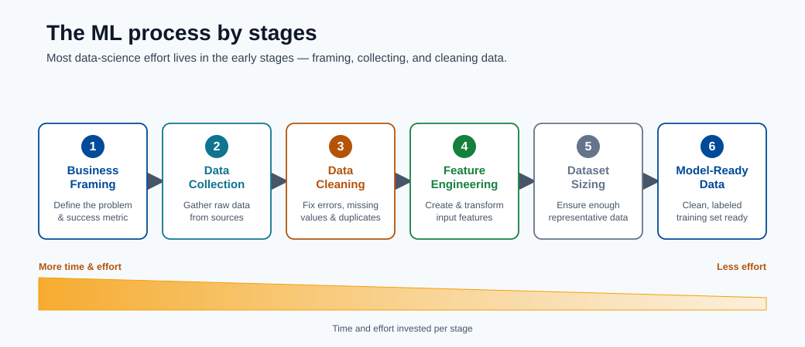
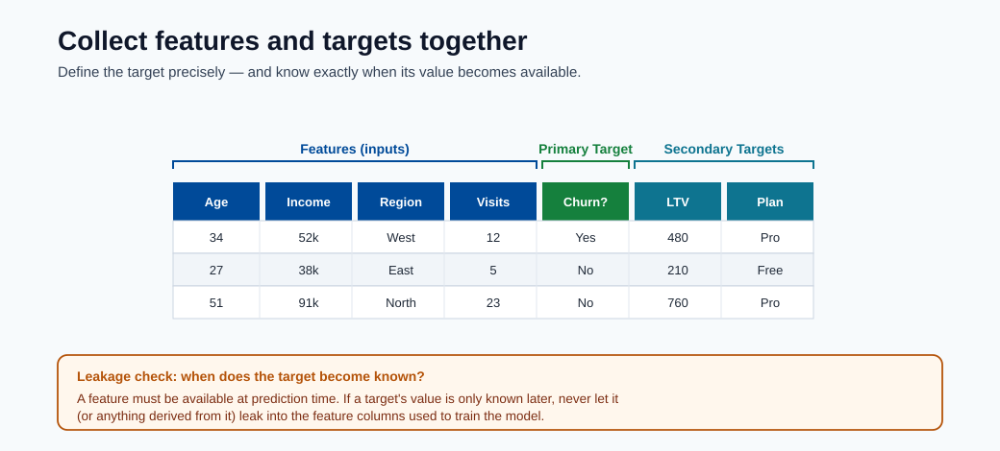
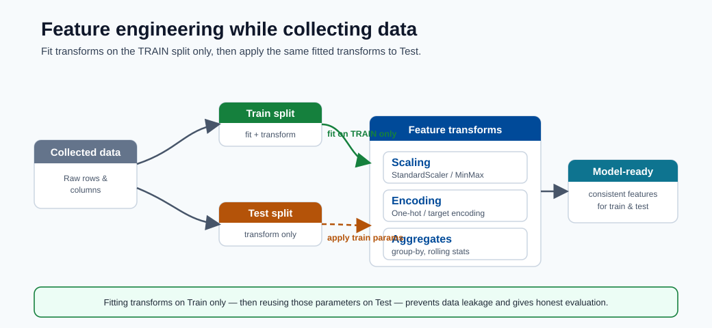
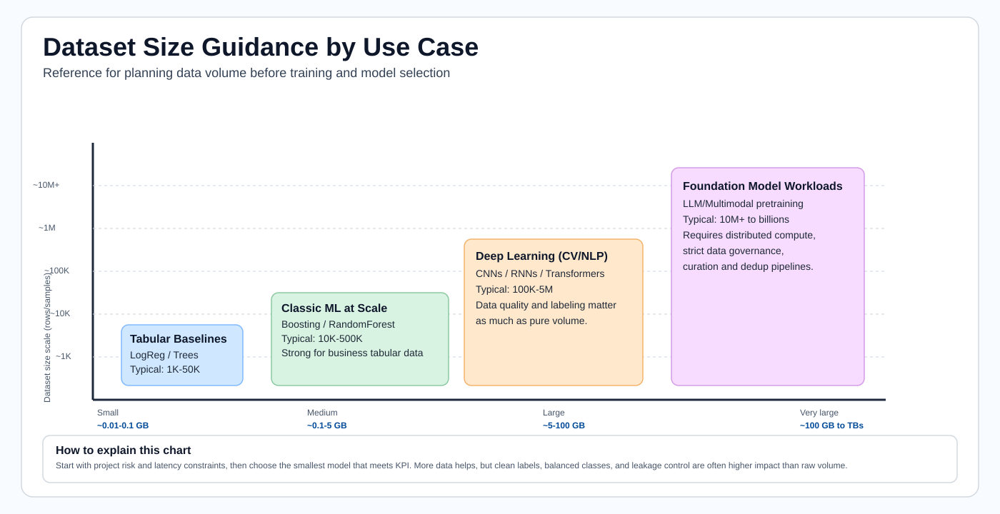
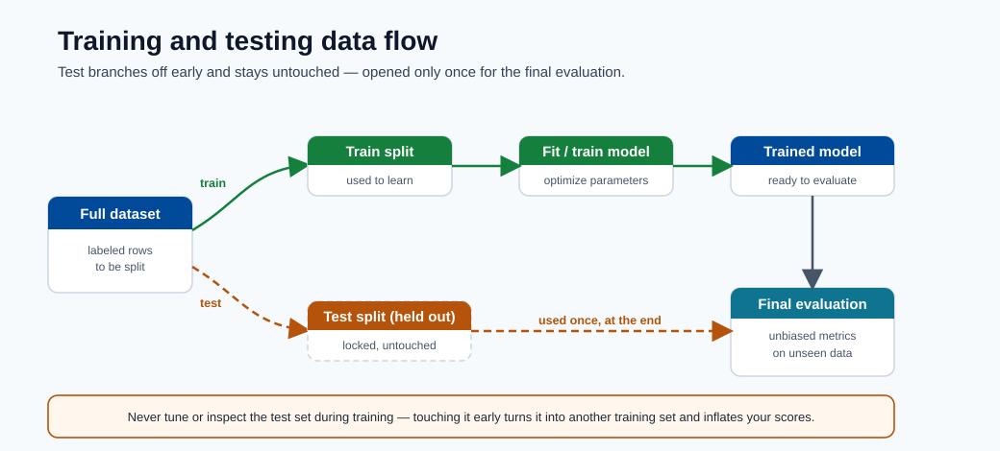
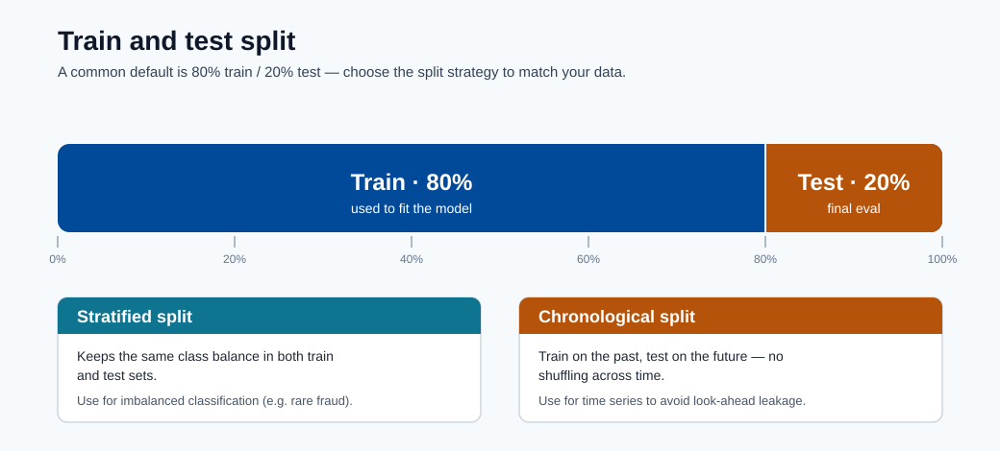
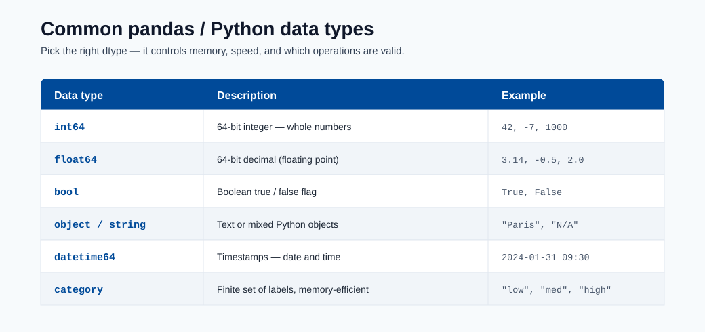

Data Preparation¶
Data preparation is often the highest-effort stage of ML delivery. This module teaches how to move from raw data to model-ready data with quality, reproducibility, and leakage prevention.
Data lifecycle overview¶
This sequence illustrates the lifecycle: business framing, data collection, feature engineering, and dataset sizing for reliable model training.

Note - What this shows: The data lifecycle by stage : from business framing through collection and feature engineering. Most delivery effort lives in these early stages, and defects here cap the quality any model can reach.

Note - What this shows: How primary and secondary targets are collected alongside features. Defining the target precisely (and when it becomes known) is what later prevents target leakage.

Tip - Practical point: Feature engineering should happen while you understand the data, but transforms must be fit on the training split only. Designing features and the split strategy together is how you keep preprocessing leakage-free.

Tip - How to use this chart: Match your use case to a dataset-size band before committing to a model family. Tabular baselines need far less data than deep learning; foundation-model workloads need orders of magnitude more. Sizing data first avoids choosing a model you cannot feed.
Note - GB reference: In dataset planning, vendor storage is typically decimal units: 1 KB = 1,000 bytes, 1 MB = 1,000,000 bytes, 1 GB = 1,000,000,000 bytes. Memory tools may show binary units instead: 1 GiB = 1,073,741,824 bytes, so 1 GB is approximately 0.93 GiB.
Preparation checklist¶
- Remove duplicates and nulls
- Validate schema and dtypes
- Split train and test sets
- Register datasets in Azure ML
Data quality dimensions¶
| Dimension | Why it matters |
|---|---|
| Completeness | Missing values can bias training |
| Consistency | Schema/type drift breaks pipelines |
| Accuracy | Noisy labels reduce model ceiling |
| Timeliness | Stale data hurts production relevance |
Minimal preprocessing pipeline¶
- Remove duplicates and invalid records.
- Define feature and target columns.
- Handle missing values (imputation strategy).
- Encode categorical features.
- Split data with leakage-safe strategy.
Useful split:
from sklearn.model_selection import train_test_split
X_train, X_test, y_train, y_test = train_test_split(X, y, test_size=0.33, random_state=1)
For time-series forecasting, use chronological splits (never random shuffle across time).
The next visuals reinforce how supervised datasets are split and validated before training, plus a dtype reference to prevent schema and conversion errors.

Note - What this shows: The flow of data through training and testing stages. The test set branches off early and is untouched until final evaluation : the discipline that keeps offline scores honest.

Note - What this shows: A train/test split. For class imbalance use a stratified split to preserve class ratios; for time series use a chronological split so the model never trains on future data.

Note - What this shows: A reference of Python/pandas data types. Validating dtypes against your data contract catches schema drift and silent conversion bugs before they corrupt training.
Data leakage warning¶
Leakage happens when future/target information enters training features. Typical causes:
- Fitting preprocessors on full data before split.
- Including post-outcome fields.
- Random split on temporal data.
Leakage creates inflated offline metrics and poor production behavior.
Correct vs incorrect pipeline pattern¶
# WRONG: fit scaler on full dataset before split
scaler = StandardScaler()
X_scaled = scaler.fit_transform(X) # leaks test statistics into train
X_train, X_test = train_test_split(X_scaled, ...)
# CORRECT: fit scaler only on training data
X_train, X_test, y_train, y_test = train_test_split(X, y, test_size=0.2, random_state=42)
scaler = StandardScaler()
X_train_scaled = scaler.fit_transform(X_train) # fit on train only
X_test_scaled = scaler.transform(X_test) # transform test using train stats
Wrap this into a sklearn.pipeline.Pipeline so that fit/transform are always applied consistently:
from sklearn.pipeline import Pipeline
from sklearn.preprocessing import StandardScaler
from sklearn.linear_model import LogisticRegression
pipeline = Pipeline([
("scaler", StandardScaler()),
("model", LogisticRegression())
])
pipeline.fit(X_train, y_train) # scaler.fit only on X_train inside
pipeline.score(X_test, y_test) # scaler.transform on X_test
Data contract (recommended)¶
Define a contract before training so all producers/consumers align:
| Field | Type | Nullable | Allowed range/pattern | Notes |
|---|---|---|---|---|
customer_id |
string | No | UUID regex | Unique identifier |
event_ts |
datetime | No | ISO-8601 | Event timestamp (UTC) |
label |
int | Yes | 0 or 1 | Null for inference-only rows |
amount |
float | No | >= 0 | Monetary feature |
Validation gates before training¶
- Schema gate: columns and dtypes match contract.
- Quality gate: null rates, duplicate rates, outlier checks within thresholds.
- Drift gate: feature distribution shift below configured limits.
- Leakage gate: no post-outcome features in training set.
Split strategies by problem type¶
| Problem | Recommended split | Notes |
|---|---|---|
| IID tabular classification/regression | Random train/val/test split | Use stratified split if class imbalance exists |
| Time series | Chronological split (rolling/expanding windows) | Random shuffle destroys temporal order |
| Entity-correlated data (users/devices) | Group split by entity key | Prevents entity bleed-through |
| Rare event detection | Stratified random split | Ensures minority class in each fold |
Deep dive: every concept, explained¶
This section explains the reasoning behind each preparation step so the rules become principles you can apply to new datasets.
Why data preparation dominates the effort¶
A model can only learn the signal that survives in the data. Every defect : a mislabeled row, a leaked feature, an inconsistent unit : sets a hard ceiling on achievable quality that no algorithm can break through. This is the practical meaning of "garbage in, garbage out", and it is why teams spend most of their time here.
Imputation: choosing how to fill missing values¶
Imputation replaces missing values so models that cannot accept nulls can run. The method encodes an assumption about why the value is missing:
| Strategy | Assumption | Risk |
|---|---|---|
| Mean/median fill | Missing at random; central value is representative | Shrinks variance, hides structure |
| Mode fill (categorical) | Most frequent category is a safe default | Over-represents the majority |
| Model-based (kNN/MICE) | Missingness predictable from other features | Costlier, can leak if fit on full data |
| "Missing" indicator | Missingness itself is informative | Adds dimensionality |
Crucially, the imputer must be fit on the training split only, then applied to validation and test : otherwise statistics from held-out data leak into training.
Encoding categorical features¶
Models operate on numbers, so categories must be converted:
- One-hot encoding creates a binary column per category. Safe for low-cardinality features; explodes dimensionality for high-cardinality ones.
- Ordinal encoding maps categories to integers. Only valid when categories have a true order (e.g. small/medium/large), otherwise it invents a fake ranking.
- Target/mean encoding replaces a category with the mean target for that category. Powerful for high cardinality but a prime leakage source : it must be computed within cross-validation folds, never on the full dataset.
Tree-based models (and CatBoost natively) tolerate raw categoricals better than linear models, which is part of why they dominate tabular problems.
Why scaling, and why fit-on-train only¶
Feature scaling (e.g. StandardScaler: subtract mean, divide by standard deviation) puts
features on comparable ranges. It matters for distance- and gradient-based models (kNN, SVM,
linear models, neural nets) where a large-magnitude feature would otherwise dominate; tree
models are scale-invariant and do not need it. The scaler's mean and standard deviation are
learned parameters : fitting them on the full dataset before splitting lets test-set
statistics influence the training transform, the leakage shown in the WRONG example above.
Data leakage, formalized¶
Leakage is any situation where information unavailable at prediction time enters training. It inflates offline metrics and collapses in production. Three mechanisms recur:
- Preprocessing leakage : fitting scalers/imputers/encoders on data that includes the test
split. Fixed by fitting transforms inside a
Pipelineafter the split. - Target leakage : a feature that is a proxy for, or computed from, the outcome (e.g. "account_closed_date" when predicting churn). Fixed by auditing each feature's availability timing relative to the prediction moment.
- Temporal leakage : randomly shuffling time-ordered data so the model "sees the future". Fixed by chronological splits.
The Pipeline pattern is the structural defense: because fit only ever sees training data and
transform is reapplied identically to new data, leakage through preprocessing becomes
impossible by construction.
Train / validation / test, and stratification¶
- Train fits parameters, validation tunes hyperparameters and compares models, test gives one final unbiased estimate.
- Stratified splitting preserves the class ratio in each split. Without it, a rare positive class (e.g. 1% fraud) can be under-represented or missing from a fold, making metrics noisy or undefined. Stratify on the label for classification; for time series, never shuffle at all.
The data contract and validation gates as a quality firewall¶
The data contract (schema, types, nullability, ranges) turns implicit assumptions into an enforceable agreement between data producers and the training pipeline. The four validation gates (schema, quality, drift, leakage) are automated checks that block a bad dataset from ever reaching training : the data-engineering equivalent of unit tests. This shifts failures left, where they are cheap to fix, instead of discovering them as degraded production predictions weeks later.
Handling imbalanced data¶
Many high-value problems (fraud, churn, defects) have a rare positive class. A naive model can score 99% accuracy by always predicting "negative" while catching zero positives, so imbalance must be handled deliberately:
| Technique | How it works | Watch out for |
|---|---|---|
| Class weights | Penalize errors on the rare class more in the loss | Simplest, no data change; tune the weight |
| Oversampling (e.g. SMOTE) | Synthesize more minority examples | Fit only on the training split, never before the split |
| Undersampling | Drop majority examples | Throws away data; use when majority is huge |
| Threshold tuning | Move the decision cutoff after training | Decouples the model from the business cutoff |
Note - Resample after splitting: Any resampling (SMOTE, under/oversampling) must happen inside the training fold only. Resampling before the split leaks synthetic neighbors of test rows into training and produces over-optimistic offline scores.
Stratified split example¶
from sklearn.model_selection import train_test_split
# stratify= ensures label proportions are preserved in each split
X_train, X_test, y_train, y_test = train_test_split(
X, y, test_size=0.2, random_state=42, stratify=y
)
Feature engineering patterns¶
- Numeric: scaling, clipping, log transforms.
- Categorical: one-hot, target encoding (with leakage-safe folds).
- Time: lags, rolling aggregates, calendar/seasonality features.
- Text: tokenization, TF-IDF, embeddings.
Log transform example (skewed numeric)¶
import numpy as np
import pandas as pd
df["amount_log"] = np.log1p(df["amount"]) # log1p = log(1+x), safe for 0 values
Rolling aggregate (time-series features)¶
df = df.sort_values("event_ts")
df["spend_7d"] = df.groupby("customer_id")["amount"].transform(
lambda x: x.rolling(window=7, min_periods=1).sum()
)
Target encoding with leakage protection (cross-fold)¶
from category_encoders import TargetEncoder
from sklearn.model_selection import cross_val_score
enc = TargetEncoder(smoothing=10)
X_encoded = enc.fit_transform(X_train[["category"]], y_train)
# The encoder estimates within-fold statistics when used inside a cross-validation pipeline
Reproducibility checklist¶
- Persist transformation pipeline with model artifacts.
- Version dataset snapshots and schema definitions.
- Store split seeds and split indices for exact reruns.
- Record feature list and feature order used for training.
Quick self-check¶
| # | Question | Answer |
|---|---|---|
| 1 | Why is random split wrong for most forecasting tasks? | Forecasting data is time-ordered, so a random split leaks future information into training; you must split chronologically. |
| 2 | Which quality dimension is impacted by schema mismatch? | Validity — the data no longer conforms to the expected types/schema. |
| 3 | What is one common source of data leakage? | Fitting transforms (or using target/future information) on the full dataset before splitting train and test. |
| 4 | Why must a scaler or imputer be fit on the training split only? | Fitting on all data leaks test statistics into training, giving an optimistically biased evaluation; fit on train and apply to validation/test. |
| 5 | Where in the pipeline must SMOTE/oversampling happen, and why? | Only on the training fold after splitting (inside cross-validation), so synthetic samples never leak into validation/test. |
Exploratory Data Analysis (EDA) workflow¶
EDA is the systematic investigation of a dataset before modeling. Its purpose is to understand the structure and quality of data, surface anomalies, reveal distributional properties, and generate feature engineering hypotheses. Skipping EDA leads to surprises during training and unexplained model failures in production.
A disciplined EDA follows this sequence:
1. Shape and dtypes audit
2. Univariate distributions
3. Bivariate relationships
4. Correlation matrix
5. Outlier detection
6. Target analysis
7. Missing value map
Step 1: Shape and dtypes audit¶
The first action is always to understand what you have.
import pandas as pd
df = pd.read_csv("dataset.csv")
print(df.shape) # (rows, columns)
print(df.dtypes) # type of each column
print(df.head()) # first five rows
print(df.describe()) # count, mean, std, min, quartiles, max for numerics
print(df.info()) # non-null counts and dtypes together
Check for columns that are read as object when they should be numeric (often signals encoding
issues), and for datetime columns parsed as strings. Fix dtypes before any other analysis.
# Fix common dtype problems
df["event_ts"] = pd.to_datetime(df["event_ts"])
df["amount"] = pd.to_numeric(df["amount"], errors="coerce") # coerce bad values to NaN
Step 2: Univariate distributions¶
For each feature, understand the marginal distribution independently of other features.
import matplotlib.pyplot as plt
# Numeric: histogram + KDE
df["amount"].plot(kind="hist", bins=50, figsize=(8, 4), title="Amount distribution")
plt.show()
# Categorical: bar chart of value counts
df["category"].value_counts().plot(kind="bar", figsize=(8, 4), title="Category frequency")
plt.show()
# Summary stats for all numerics
print(df.describe(percentiles=[0.01, 0.05, 0.25, 0.5, 0.75, 0.95, 0.99]))
Key things to note: heavy right skew (signals log transform), multimodality (may indicate subpopulations), and near-zero variance (near-constant features carry no signal).
Step 3: Bivariate plots¶
Explore relationships between feature pairs and between each feature and the target.
import seaborn as sns
# Scatter: numeric vs numeric
sns.scatterplot(data=df, x="feature_a", y="feature_b", hue="label", alpha=0.4)
plt.show()
# Box plot: numeric vs categorical target
sns.boxplot(data=df, x="label", y="amount")
plt.show()
# Violin plot for richer distribution comparison
sns.violinplot(data=df, x="label", y="amount", inner="quartile")
plt.show()
Tip - Overplotting on large datasets: When
n > 100,000, sample before plotting to avoid rendering bottlenecks:df.sample(10_000, random_state=42).
Step 4: Correlation matrix¶
The Pearson correlation matrix shows pairwise linear relationships between numeric features.
import seaborn as sns
import matplotlib.pyplot as plt
corr = df.select_dtypes(include="number").corr()
plt.figure(figsize=(12, 10))
sns.heatmap(corr, annot=True, fmt=".2f", cmap="coolwarm", center=0,
linewidths=0.5, vmin=-1, vmax=1)
plt.title("Pearson Correlation Matrix")
plt.tight_layout()
plt.show()
Values close to \(\pm 1\) indicate near-collinear features; one can often be dropped without losing information. High correlation between a feature and the target is a strong signal of predictive power — but verify it is not target leakage.
Note - Pearson limitations: Pearson measures only linear association. Use Spearman rank correlation (
corr(method='spearman')) for monotonic non-linear relationships, and mutual information for arbitrary dependencies.
Step 5: Outlier detection¶
Outliers are extreme observations that can distort model training, particularly for linear models and distance-based methods.
# Z-score method: flag observations more than 3 std devs from mean
from scipy import stats
import numpy as np
z_scores = np.abs(stats.zscore(df.select_dtypes(include="number")))
outlier_mask = (z_scores > 3).any(axis=1)
print(f"Outlier rows (z > 3): {outlier_mask.sum()}")
# IQR method: more robust to heavy tails
Q1 = df["amount"].quantile(0.25)
Q3 = df["amount"].quantile(0.75)
IQR = Q3 - Q1
lower = Q1 - 1.5 * IQR
upper = Q3 + 1.5 * IQR
print(df[(df["amount"] < lower) | (df["amount"] > upper)].shape[0], "IQR outliers")
Outlier treatment options: clipping (cap at 99th percentile), removal (only if clearly erroneous), or robust modeling (tree models tolerate outliers well).
Step 6: Target analysis¶
Understanding the target distribution is critical before any modeling decision.
# Classification: check class imbalance
print(df["label"].value_counts(normalize=True))
# If minority class < 5%, plan for imbalance handling
# Regression: check target skew
print(f"Target skewness: {df['target'].skew():.3f}")
# |skew| > 1 suggests log-transforming the target for linear models
# Plot target distribution
df["target"].plot(kind="hist", bins=40, title="Target distribution")
plt.show()
Note - Imbalance threshold: A class imbalance below 10% minority deserves explicit handling. Below 1% (rare events), standard accuracy is meaningless; use precision-recall AUC instead.
Step 7: Missing value map¶
Visualize and quantify missingness to decide on imputation strategies.
import missingno as msno # pip install missingno
# Matrix plot: shows missingness pattern across rows
msno.matrix(df, figsize=(12, 6))
plt.show()
# Bar chart: fraction missing per column
msno.bar(df, figsize=(12, 4))
plt.show()
# Summary table
missing_summary = df.isnull().mean().sort_values(ascending=False)
print(missing_summary[missing_summary > 0])
If two columns are missing in the same rows, they may share a common cause — this can inform a "missingness" indicator feature that itself has predictive power.
Feature engineering deep dive¶
Feature engineering is the process of transforming raw columns into representations that expose signal to the model. It is the largest single lever for improving performance on tabular data. The following subsections cover numeric transforms, interaction construction, temporal features, and text representations.
Numeric feature transformations¶
Raw numeric features are rarely in the optimal form for learning. The most common issue is skewness: a long right tail means most values cluster near zero while a few extreme values dominate the scale.
Log transform is the simplest fix for right-skewed, strictly positive features:
Using \(\log(1+x)\) (implemented as np.log1p) avoids undefined values at \(x=0\).
import numpy as np
df["revenue_log"] = np.log1p(df["revenue"])
print(f"Before: skew={df['revenue'].skew():.2f}")
print(f"After: skew={df['revenue_log'].skew():.2f}")
Box-Cox transform finds the optimal power \(\lambda\) to normalize a distribution. It requires strictly positive values:
from scipy.stats import boxcox
df["revenue_bc"], lambda_bc = boxcox(df["revenue"] + 1) # +1 ensures positivity
print(f"Optimal lambda: {lambda_bc:.4f}")
Yeo-Johnson transform extends Box-Cox to handle zero and negative values:
from sklearn.preprocessing import PowerTransformer
pt = PowerTransformer(method="yeo-johnson")
df_transformed = pt.fit_transform(df[["revenue", "spend"]])
When to use which:
| Transform | Requirements | Best for |
|---|---|---|
| Log / log1p | \(x \geq 0\) | Revenue, counts, prices |
| Box-Cox | \(x > 0\) | Strictly positive, unknown distribution |
| Yeo-Johnson | Any sign | General purpose, recommended default |
| Quantile transform | Any | When rank-based normality matters |
Note - Scale before linear models, not trees: Tree-based models are invariant to monotonic transformations of individual features. Power transforms matter most for linear models, SVMs, and neural networks where the scale and distribution of inputs affect optimization.
Interaction features¶
Some predictive signal only exists in the combination of two features. A single feature may be uninformative; multiplied or divided, it becomes highly predictive.
Product features capture multiplicative effects:
df["length_x_width"] = df["length"] * df["width"] # area proxy
df["price_x_qty"] = df["unit_price"] * df["quantity"] # revenue proxy
Ratio features normalize one feature by another:
df["spend_per_visit"] = df["total_spend"] / (df["visit_count"] + 1)
df["click_through_rate"] = df["clicks"] / (df["impressions"] + 1)
Polynomial features expand all features to degree \(d\), including cross-products:
from sklearn.preprocessing import PolynomialFeatures
poly = PolynomialFeatures(degree=2, interaction_only=False, include_bias=False)
X_poly = poly.fit_transform(X[["age", "income", "tenure"]])
print(f"Original: 3 features -> Polynomial degree-2: {X_poly.shape[1]} features")
Note - Curse of dimensionality: Polynomial features at degree 2 with \(p\) original features produce \(O(p^2)\) new features. At degree 3, \(O(p^3)\). With \(p=100\) features and degree 2, you get roughly 5,000 features — more than most datasets can support. Use domain knowledge to select interactions manually, or use
interaction_only=Truewith a regularized model to let the penalty prune uninformative ones.
When interactions matter: use them when domain knowledge suggests a combined effect (e.g. area = length × width), when bivariate EDA shows a non-additive pattern, or when a linear model underfits while tree models do not.
Date and time features¶
Raw timestamps are opaque to most models. Decomposing them into numeric calendar fields exposes seasonal and cyclical patterns.
import pandas as pd
import numpy as np
df["event_ts"] = pd.to_datetime(df["event_ts"])
# Calendar decomposition
df["year"] = df["event_ts"].dt.year
df["month"] = df["event_ts"].dt.month # 1–12
df["day"] = df["event_ts"].dt.day # 1–31
df["hour"] = df["event_ts"].dt.hour # 0–23
df["weekday"] = df["event_ts"].dt.dayofweek # 0=Monday, 6=Sunday
df["is_weekend"] = (df["weekday"] >= 5).astype(int)
df["quarter"] = df["event_ts"].dt.quarter
Cyclical encoding prevents the model from treating hour 23 as "far" from hour 0. Encode circular features with sine and cosine projections:
df["hour_sin"] = np.sin(2 * np.pi * df["hour"] / 24)
df["hour_cos"] = np.cos(2 * np.pi * df["hour"] / 24)
# Same pattern for month (period=12) and weekday (period=7)
df["month_sin"] = np.sin(2 * np.pi * df["month"] / 12)
df["month_cos"] = np.cos(2 * np.pi * df["month"] / 12)
Days since event captures recency:
reference_date = pd.Timestamp("2024-01-01")
df["days_since_signup"] = (df["event_ts"] - df["signup_ts"]).dt.days
df["days_since_reference"] = (df["event_ts"] - reference_date).dt.days
Holiday flags using the holidays library:
import holidays
us_holidays = holidays.US(years=range(2020, 2026))
df["is_holiday"] = df["event_ts"].dt.date.astype(str).map(
lambda d: 1 if d in us_holidays else 0
)
Text features¶
When features include free-text columns, they must be numerically encoded before training.
Bag of Words (BoW) counts term occurrences per document:
from sklearn.feature_extraction.text import CountVectorizer
cv = CountVectorizer(max_features=5000, stop_words="english")
X_bow = cv.fit_transform(df["description"]) # sparse matrix (n_docs, vocab_size)
TF-IDF down-weights terms that appear in nearly every document (low discriminative value):
where \(\text{TF}(t,d)\) is the frequency of term \(t\) in document \(d\), \(N\) is the total number of documents, and \(df(t)\) is the number of documents containing term \(t\).
from sklearn.feature_extraction.text import TfidfVectorizer
tfidf = TfidfVectorizer(max_features=10_000, ngram_range=(1, 2), sublinear_tf=True)
X_tfidf = tfidf.fit_transform(df["description"])
N-grams extend BoW/TF-IDF to capture multi-word phrases. ngram_range=(1, 2) includes
unigrams and bigrams, e.g. "not good" as a single token alongside "not" and "good".
Embeddings map text into a dense low-dimensional semantic space (e.g. sentence-transformers or OpenAI embeddings). They capture meaning rather than just term overlap:
from sentence_transformers import SentenceTransformer
model = SentenceTransformer("all-MiniLM-L6-v2")
embeddings = model.encode(df["description"].tolist(), show_progress_bar=True)
# embeddings shape: (n_docs, 384)
When to use each:
| Method | Dimensionality | Captures semantics | Training cost | Best for |
|---|---|---|---|---|
| Bag of Words | High (vocab size) | No | Very low | Keyword-dominated problems |
| TF-IDF | High (vocab size) | Partially | Very low | Document classification baseline |
| N-grams (bi/tri) | Very high | Partially | Low | Sentiment, phrase detection |
| Pretrained embeddings | Low (128–1536) | Yes | Low (inference only) | Semantic similarity, low data |
Dimensionality reduction¶
High-dimensional feature spaces cause several problems: sparsity, multicollinearity, slow training, and overfitting. Dimensionality reduction condenses the space while preserving as much useful structure as possible.
PCA from scratch¶
Principal Component Analysis finds the directions (principal components) of maximum variance in the data and projects the data onto a lower-dimensional subspace.
Algorithm:
- Center the data: \(\tilde{X} = X - \bar{X}\)
- Compute the covariance matrix: \(C = \frac{1}{n-1}\tilde{X}^T\tilde{X}\)
- Compute eigenvectors and eigenvalues: \(C v_k = \lambda_k v_k\)
- Sort by eigenvalue descending; keep the top \(k\) eigenvectors.
- Project: \(Z = \tilde{X} W_k\) where \(W_k\) contains the top-\(k\) eigenvectors as columns.
The explained variance ratio of component \(k\) is \(\frac{\lambda_k}{\sum_j \lambda_j}\).
import numpy as np
import matplotlib.pyplot as plt
from sklearn.preprocessing import StandardScaler
from sklearn.decomposition import PCA
# Scale first: PCA is sensitive to feature magnitude
scaler = StandardScaler()
X_scaled = scaler.fit_transform(X_train)
# Fit PCA on training data only
pca = PCA()
pca.fit(X_scaled)
# Scree plot: visualize explained variance per component
plt.figure(figsize=(9, 4))
plt.plot(np.cumsum(pca.explained_variance_ratio_), marker="o")
plt.axhline(0.95, color="red", linestyle="--", label="95% threshold")
plt.xlabel("Number of components")
plt.ylabel("Cumulative explained variance")
plt.title("PCA Scree Plot")
plt.legend()
plt.tight_layout()
plt.show()
# Choose k components that explain 95% of variance
k = np.argmax(np.cumsum(pca.explained_variance_ratio_) >= 0.95) + 1
print(f"Components for 95% variance: {k}")
pca_k = PCA(n_components=k)
X_train_pca = pca_k.fit_transform(X_scaled)
X_test_pca = pca_k.transform(scaler.transform(X_test))
Limitations of PCA:
- Only captures linear variance structure; cannot unroll a manifold.
- Principal components are linear combinations of all original features, so they are not directly interpretable.
- Sensitive to outliers (which distort the covariance matrix).
- Does not account for the target variable; components that explain variance in \(X\) may not be the components that explain variance in \(y\).
Tip - Supervised alternatives: When labels are available, use Linear Discriminant Analysis (LDA) for classification or supervised PCA variants that maximize class separability rather than total variance.
Feature selection methods¶
Feature selection retains a subset of original features, preserving interpretability unlike PCA. Three families exist:
Filter methods rank features by a univariate statistic, independent of any model:
from sklearn.feature_selection import SelectKBest, mutual_info_classif, f_classif
# Mutual information: works for non-linear relationships
selector_mi = SelectKBest(score_func=mutual_info_classif, k=20)
X_train_mi = selector_mi.fit_transform(X_train, y_train)
# F-statistic (ANOVA): linear relationship assumption
selector_f = SelectKBest(score_func=f_classif, k=20)
X_train_f = selector_f.fit_transform(X_train, y_train)
Wrapper methods evaluate subsets by model performance:
from sklearn.feature_selection import RFE
from sklearn.ensemble import RandomForestClassifier
rfe = RFE(estimator=RandomForestClassifier(n_estimators=50, random_state=42),
n_features_to_select=20, step=5)
rfe.fit(X_train, y_train)
selected_features = X_train.columns[rfe.support_].tolist()
print("RFE-selected features:", selected_features)
Embedded methods perform selection during model training:
# LASSO (L1) drives small coefficients to exactly zero
from sklearn.linear_model import LassoCV
import numpy as np
lasso = LassoCV(cv=5, random_state=42)
lasso.fit(X_train_scaled, y_train)
selected = np.where(lasso.coef_ != 0)[0]
print(f"LASSO kept {len(selected)} of {X_train.shape[1]} features")
# Tree-based importance
import pandas as pd
from sklearn.ensemble import RandomForestClassifier
rf = RandomForestClassifier(n_estimators=100, random_state=42)
rf.fit(X_train, y_train)
importances = pd.Series(rf.feature_importances_, index=X_train.columns)
print(importances.sort_values(ascending=False).head(20))
Comparison:
| Method | Speed | Interactions | Overfitting risk | Best for |
|---|---|---|---|---|
| Filter (mutual info) | Very fast | No | None | Quick screening, large feature sets |
| Wrapper (RFE) | Slow | Partial | Medium | Medium datasets, interpretability |
| Embedded (LASSO) | Fast | No | Low | Linear models, sparse solutions |
| Embedded (tree importance) | Medium | Yes | Low | Tree pipelines |
Advanced split strategies¶
Time-series cross-validation¶
For time-ordered data, standard \(k\)-fold cross-validation is invalid because it allows models to train on future data. Two corrected strategies exist:
Expanding window: the training set grows with each fold; the validation set is always the next contiguous window.
Rolling window: both training and validation windows move forward; training size stays fixed.
A gap between train and validation is often necessary to avoid temporal leakage from features that look back (e.g. rolling 7-day sums would include validation-period rows if no gap exists).
from sklearn.model_selection import TimeSeriesSplit
tscv = TimeSeriesSplit(n_splits=5, gap=7) # gap=7 periods between train and val
for fold, (train_idx, val_idx) in enumerate(tscv.split(X)):
X_tr, X_val = X.iloc[train_idx], X.iloc[val_idx]
y_tr, y_val = y.iloc[train_idx], y.iloc[val_idx]
print(f"Fold {fold}: train [{train_idx[0]}:{train_idx[-1]}] "
f"val [{val_idx[0]}:{val_idx[-1]}]")
Note - Gap selection: Set the gap to match the prediction horizon. If you are predicting 7 days ahead, the gap should be at least 7 periods so the validation set only contains observations the model would never have seen at the training cutoff.
Stratified k-fold in detail¶
StratifiedKFold divides the dataset into \(k\) folds while preserving the class distribution
in each fold. This is critical for imbalanced datasets where a fold could otherwise contain
zero positive examples.
from sklearn.model_selection import StratifiedKFold
from sklearn.metrics import roc_auc_score
import numpy as np
skf = StratifiedKFold(n_splits=5, shuffle=True, random_state=42)
oof_preds = np.zeros(len(y))
for fold, (train_idx, val_idx) in enumerate(skf.split(X, y)):
X_tr, X_val = X.iloc[train_idx], X.iloc[val_idx]
y_tr, y_val = y.iloc[train_idx], y.iloc[val_idx]
model.fit(X_tr, y_tr)
oof_preds[val_idx] = model.predict_proba(X_val)[:, 1]
fold_auc = roc_auc_score(y_val, oof_preds[val_idx])
print(f"Fold {fold}: AUC = {fold_auc:.4f}")
overall_auc = roc_auc_score(y, oof_preds)
print(f"OOF AUC: {overall_auc:.4f}")
Why stratification is critical: in a 1% positive-class dataset, an unstratified fold of 1,000 rows has an expected 10 positives — but with bad luck it can have 0, making AUC undefined and the fold's gradient meaningless for resampling methods.
For rare events (positive rate < 0.5%), consider grouping multiple positive examples before stratifying, or use a Monte Carlo cross-validation scheme with very small test fractions.
Nested cross-validation¶
Standard cross-validation conflates model evaluation with hyperparameter selection, producing selection bias: the score is optimistic because the hyperparameters were chosen to maximise it on the same folds used to estimate performance.
Nested cross-validation separates the two concerns:
- Outer loop evaluates the entire fitted-and-tuned model on held-out data → unbiased performance estimate.
- Inner loop searches hyperparameters on the training portion of the outer fold → fair tuning.
from sklearn.model_selection import cross_val_score, GridSearchCV, KFold
from sklearn.ensemble import RandomForestClassifier
outer_cv = KFold(n_splits=5, shuffle=True, random_state=42)
inner_cv = KFold(n_splits=3, shuffle=True, random_state=0)
param_grid = {"n_estimators": [50, 100], "max_depth": [3, 5, None]}
# GridSearchCV wraps the inner loop
clf = GridSearchCV(RandomForestClassifier(random_state=0),
param_grid=param_grid, cv=inner_cv, scoring="roc_auc")
# cross_val_score wraps the outer loop
nested_scores = cross_val_score(clf, X, y, cv=outer_cv, scoring="roc_auc")
print(f"Nested CV AUC: {nested_scores.mean():.4f} ± {nested_scores.std():.4f}")
The cost of nested CV is \(k_{\text{outer}} \times k_{\text{inner}} \times |\text{grid}|\) model
fits. For large grids and datasets, use RandomizedSearchCV in the inner loop.
Data versioning and lineage in Azure ML¶
Why version data, not just models¶
A trained model is only as reproducible as the data it was trained on. If the upstream dataset changes, an identical training script will produce a different model. Versioning data assets alongside model artifacts creates an unbroken chain of custody from raw input to deployed model: a requirement for regulated industries (financial services, healthcare) and a best practice for every production ML system.
In Azure ML, data versions are tracked through Data Assets (formerly called Datasets). A Data Asset is a pointer — with version — to data stored in Azure Blob Storage, Azure Data Lake, or any accessible URI. The data is never copied into Azure ML; only the reference and its metadata are stored.
Registering a dataset as a Data Asset¶
from azure.ai.ml import MLClient
from azure.ai.ml.entities import Data
from azure.ai.ml.constants import AssetTypes
from azure.identity import DefaultAzureCredential
ml_client = MLClient(
credential=DefaultAzureCredential(),
subscription_id="<subscription_id>",
resource_group_name="<resource_group>",
workspace_name="<workspace_name>"
)
data_asset = Data(
name="churn_features_v1",
version="2",
description="Churn model training data — Q1 2025 snapshot",
path="azureml://datastores/workspaceblobstore/paths/churn/2025Q1/",
type=AssetTypes.URI_FOLDER
)
registered = ml_client.data.create_or_update(data_asset)
print(f"Registered: {registered.name} version {registered.version}")
Referencing a versioned Data Asset in a training job¶
from azure.ai.ml import command, Input
from azure.ai.ml.constants import AssetTypes
job = command(
code="./src",
command="python train.py --data_path ${{inputs.training_data}}",
inputs={
"training_data": Input(
type=AssetTypes.URI_FOLDER,
path="azureml:churn_features_v1:2" # name:version pinned
)
},
environment="azureml:sklearn-env:1",
compute="cpu-cluster"
)
returned_job = ml_client.jobs.create_or_update(job)
Lineage: data version to run to model¶
Azure ML automatically records lineage when a Data Asset is used as a job input. This means:
- Every model registered from a job has a traceable path back to the exact data version used for training.
- If a data issue is discovered (mislabeled rows, schema drift), you can identify every downstream model trained on that data and retrain or retract them.
- The lineage graph is visible in Azure ML Studio under the model's Lineage tab.
Data Asset v2 → Training Run (job_id=abc123) → Model (churn_model v3)
↓
Metrics, parameters, code snapshot also linked
Tip - Version on every pipeline run: Automate data registration as the first step of every ML pipeline, with the version derived from the data timestamp or content hash. This ensures reproducibility without manual intervention.
Data validation with Great Expectations or Pydantic¶
The case for schema-level validation¶
Validation gates in code (if df.isnull().sum() > 0: raise) are fragile — they catch one
condition at a time. Schema-level validation frameworks define a contract as structured rules,
run all rules in one pass, and produce a human-readable report of all violations. This makes
failures actionable and shareable across the team.
Great Expectations: defining and running expectations¶
Great Expectations (GX) defines expectations on a dataset and runs them in a validation suite. A failed expectation blocks downstream processing.
import great_expectations as gx
context = gx.get_context()
# Create a Data Source pointing to a pandas DataFrame
ds = context.sources.add_pandas("my_source")
da = ds.add_dataframe_asset("churn_asset")
# Build a batch request
batch_request = da.build_batch_request(dataframe=df)
validator = context.get_validator(
batch_request=batch_request,
expectation_suite_name="churn_suite"
)
# Define expectations
validator.expect_column_values_to_not_be_null("customer_id")
validator.expect_column_values_to_not_be_null("label")
validator.expect_column_values_to_be_between("amount", min_value=0, max_value=1_000_000)
validator.expect_column_values_to_match_regex("customer_id", r"^[0-9a-f-]{36}$")
validator.expect_column_to_exist("event_ts")
validator.expect_column_values_to_be_in_set("label", [0, 1])
# Save suite and run validation
validator.save_expectation_suite()
results = validator.validate()
print("Validation passed:", results["success"])
Common expectation types:
| Expectation | What it checks |
|---|---|
expect_column_values_to_not_be_null |
No missing values |
expect_column_values_to_be_between |
Numeric range bounds |
expect_column_values_to_match_regex |
Pattern / format check |
expect_column_values_to_be_in_set |
Categorical vocabulary |
expect_column_pair_values_a_to_be_greater_than_b |
Relational constraint |
expect_table_row_count_to_be_between |
Row count bounds |
Pydantic for row-level schema validation¶
When data enters as records (e.g. from an API), Pydantic enforces types and constraints on a per-row basis with Python's type system:
from pydantic import BaseModel, Field, field_validator
from typing import Literal
import uuid
class ChurnRecord(BaseModel):
customer_id: str
amount: float = Field(ge=0.0) # must be >= 0
label: Literal[0, 1] # only 0 or 1 allowed
tenure_days: int = Field(ge=0, le=36500) # 0–100 years
@field_validator("customer_id")
@classmethod
def must_be_uuid(cls, v: str) -> str:
try:
uuid.UUID(v)
except ValueError:
raise ValueError("customer_id must be a valid UUID")
return v
# Validate a row — raises ValidationError immediately on bad data
record = ChurnRecord(
customer_id="550e8400-e29b-41d4-a716-446655440000",
amount=99.5,
label=1,
tenure_days=365
)
Tip - Fail fast at the boundary: Place Pydantic validation at the pipeline's data ingestion boundary — before any transforms run. This surfaces schema drift as an explicit, actionable error rather than a silent corruption that propagates to model predictions.
Choosing between Great Expectations and Pydantic¶
| Criterion | Great Expectations | Pydantic |
|---|---|---|
| Data shape | Batch / DataFrame | Row / record |
| Report output | HTML / JSON report | Exception with field details |
| Statistical checks | Yes (distributions, counts) | No |
| Integration | CI/CD pipelines, Azure ML | FastAPI, streaming ingestion |
| Learning curve | Medium-high | Low |